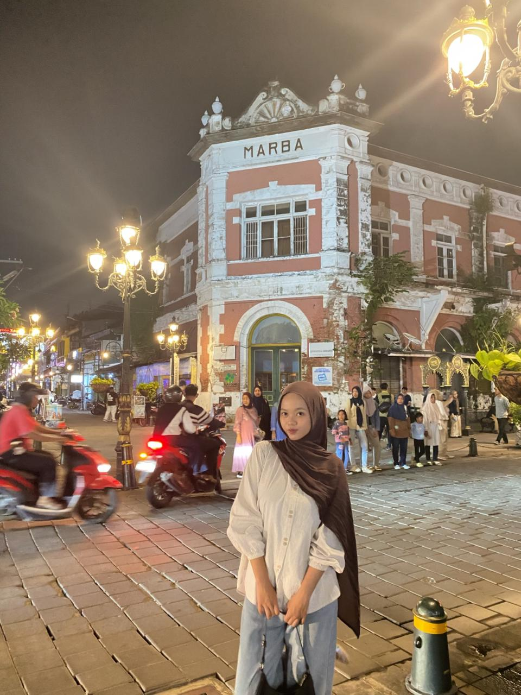

Verdina Cindy Arianti
Teknologi Informasi / UIN Walisongo Semarang
Halo!
Saya adalah mahasiswi semester 4 jurusan Teknologi Informasi di UIN Walisongo yang sedang menempuh pendidikan dan terus belajar mengembangkan kemampuan di bidang teknologi. Dalam perjalanan perkuliahan, saya tidak hanya mempelajari teori, tetapi juga mulai memahami bagaimana teknologi dapat diterapkan dalam kehidupan sehari-hari. Saya berusaha untuk terus berkembang menjadi pribadi yang lebih baik, disiplin, dan siap menghadapi tantangan di dunia digital.
Bagi saya, setiap proses adalah langkah untuk menjadi pribadi yang lebih baik. Saya memiliki harapan untuk dapat meraih masa depan yang cerah, mencapai kebahagiaan dalam hidup, serta membahagiakan dan membanggakan kedua orang tua.
Hobi & Minat
Kontak
Email: averdinacindy@gmail.com
Instagram: @cndy.arnt